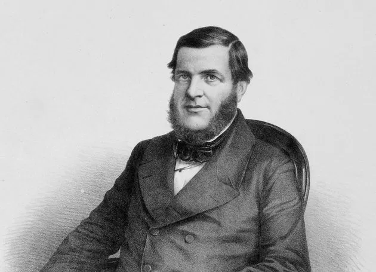
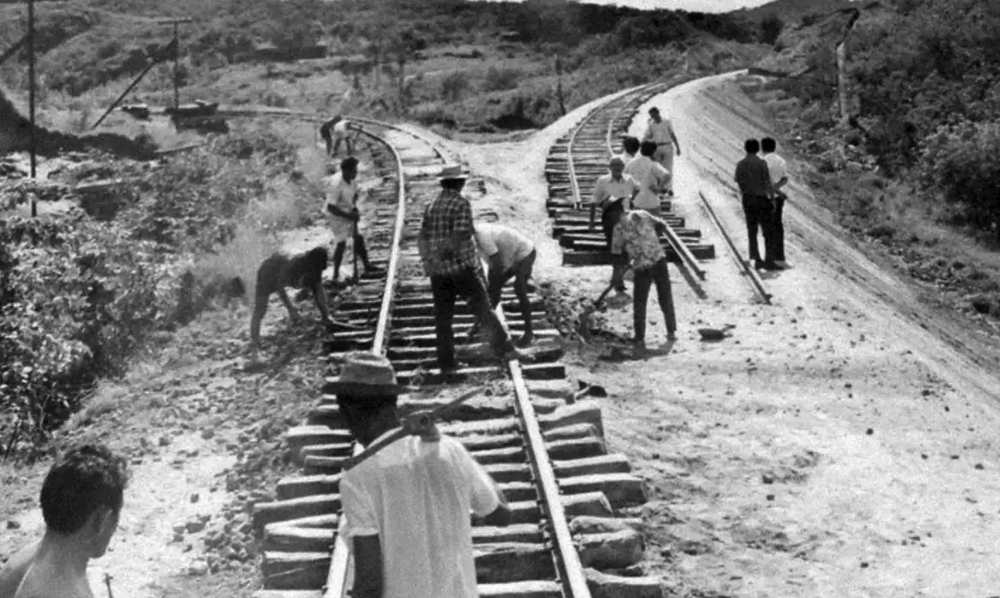
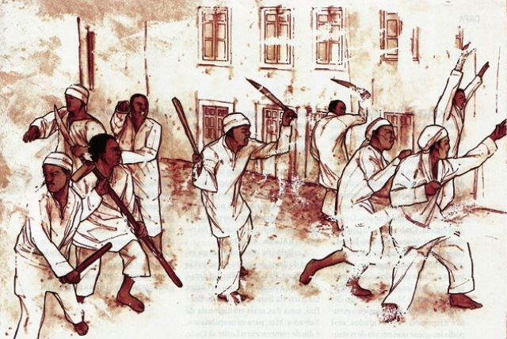

Linha do Tempo
Ano de 1850

Lei Eusébio de Queirós (1850)
A Lei Eusébio de Queirós foi um marco na luta contra o tráfico de escravos no Brasil. Com ela, a importação de escravizados foi proibida.

Início da Estrada de Ferro (1850)
Em 1850, o Brasil iniciou a construção de sua primeira estrada de ferro, a Estrada de Ferro Petrópolis, uma das primeiras grandes obras de infraestrutura no país.

Revolta dos Males (1850)
A Revolta dos Males foi uma revolta de escravizados nas fazendas de café, e um reflexo do descontentamento com o sistema escravocrata ainda vigente.